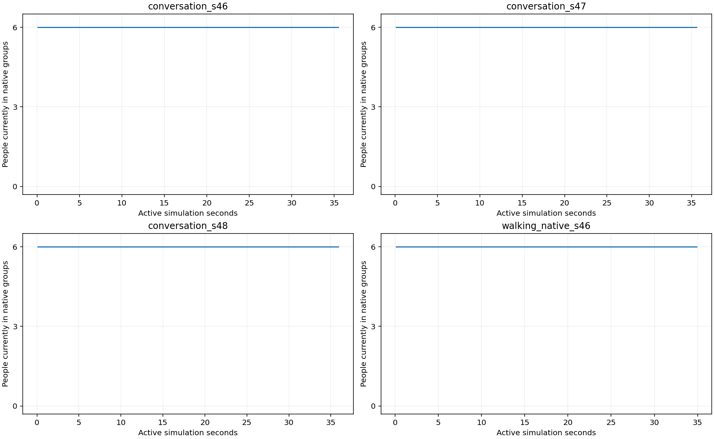

conversation_s46: PASS
Goal SUCCEEDED; 31.65s; recovery 0; min robot/person surface gap 32.8cm. Clock queries: NOT_EXERCISED.
Ba seed trò chuyện giữ nhóm riêng và một lượt walking lifecycle tự nhiên. Video RGB ghi thật từ Gazebo; phát mặc định1×thời gian mô phỏng.
Cảnh trò chuyện xác minh snapshot tuổi mục tiêu; truy vấn đến đích/hết hạn NOT_EXERCISED. Không giả lập truy vấn để làm đẹp audit. Không thay lỗi và tiêu chí lịch sử.

Goal SUCCEEDED; 31.65s; recovery 0; min robot/person surface gap 32.8cm. Clock queries: NOT_EXERCISED.
Goal SUCCEEDED; 31.76s; recovery 0; min robot/person surface gap 33.0cm. Clock queries: NOT_EXERCISED.
Goal SUCCEEDED; 32.05s; recovery 0; min robot/person surface gap 33.0cm. Clock queries: NOT_EXERCISED.
Goal SUCCEEDED; 31.09s; recovery 0; min robot/person surface gap 12.4cm. Clock queries: ORIGINAL QUERY VERIFIER.
Results · Audits · Media provenance · Frozen plan · Cohort lỗi trước